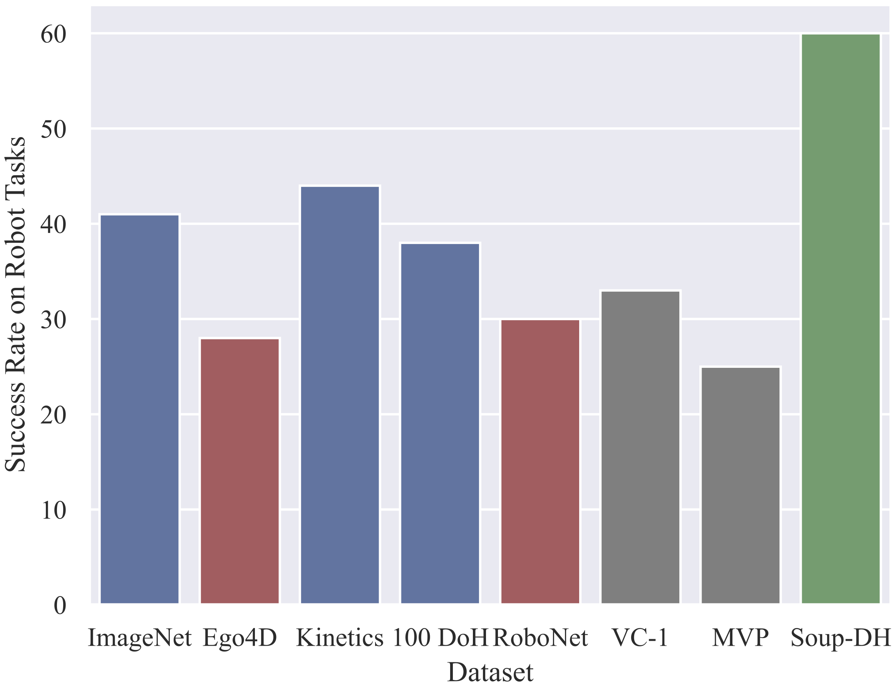
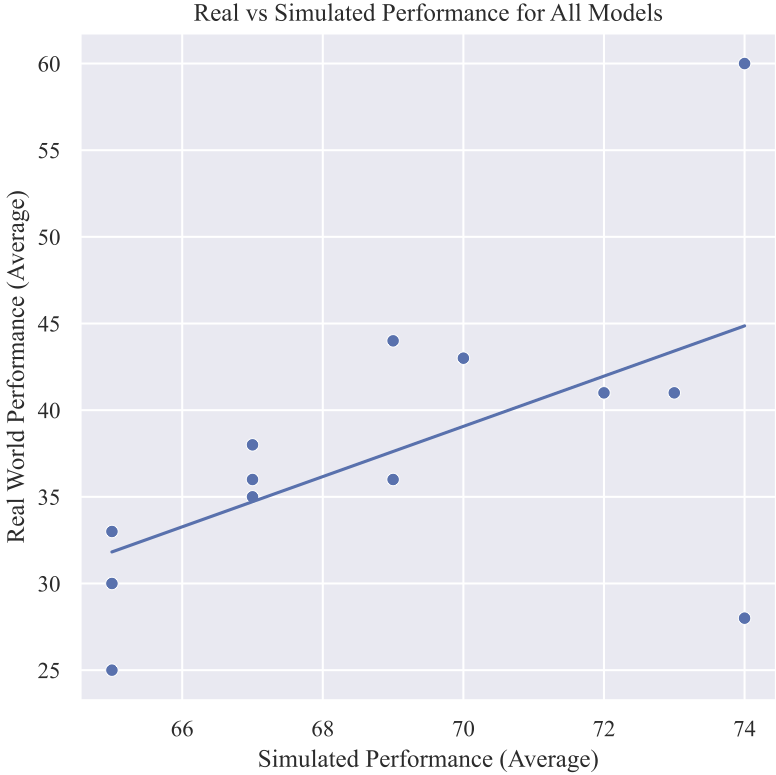

This project conducts a dataset centric analysis of robotic pre-training. Our findings call into question some common wisdom in the field. We show that standard vision datasets (like ImageNet and Kinetics) are surprisingly competitive options for visuo-motor representation learning, and that the pre-training dataset's image distribution matters more than its size. Finally, we find that common simulation benchmarks give a misleading sense of progress, and that simple regularization strategies can dramatically improve real world policy learning.
We pre-train representations using self-supervised learning algorithms (e.g., MAE and SimCLR), on different image datasets. Representations are evaluated by fine-tuning them (via Behavior Cloning) to solve a suite of manipulation tasks, both in sim and on a real Franka robot (see below).
Videos of the 3 Real World tasks used in our evaluation played at 1X speed. Note how they range from easy (stacking) to hard (toasting), but they all include some degree of generalization (e.g. to new positions/objects/configurations). For in-depth visualizations, please refer to our results video.
|
Stacking |
Pouring |
Toasting |
We pre-train representations on 5 unique datasets - ImageNet, Ego4D, 100 Days of Hands (DoH), Kinetics, and RoboNet - and evaluate their suitable for robotic representation learning.
|
Our experiments reveal that ImageNet, Kinetics, and DoH (blue) representations all perform better than those trained on RoboNet or Ego4D (red) and prior SOTA baselines (gray). This is surprising, since both Ego4D and RoboNet seem like better matches to the test tasks -- e.g., RoboNet entirely contains images of robot interactions. These results strongly suggest that the pre-training image distribution is far more important than the images' content. We combine these insights to create a final SOUP + DoH model that exceeds all prior baselines by 30! |

|
|
We consistently found that these (real world) results were not replicated in simulation! In fact, when the sim performance is plotted against real performance (across all models) it becomes clear that the two values are almost entirely uncorrelated: $R^2 = 32\%$. Even if you compare the two most similar sim and real tasks (RoboMimic's block-lift v.s., our stacking task) the correlation is still very low: $R^2 = 34\%$. This result is not necessarily surprising, since the sim2real gap in manipulation is well known. However, we feel it is important to explicitly do this analysis, since it's still very common practice in prior work to draw inferences about pre-trained representations using simulated benchmarks. |

|
@inproceedings{dasari2023datasets,
title={An Unbiased Look at Datasets for Visuo-Motor Pre-Training},
author={Dasari, Sudeep and Srirama, Mohan Kumar and Jain, Unnat and Gupta, Abhinav},
booktitle={Conference on Robot Learning},
year={2023},
organization={PMLR}
}